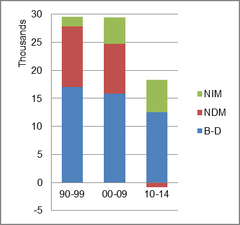
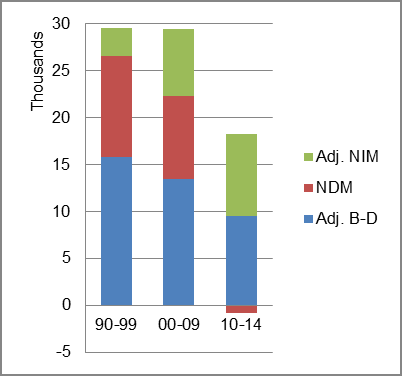

The foreign-born (FB) population increased from 16,830 in 1960 to 140,583 in 2010. That was an increase of 735.3 percent. The foreign-born share changed from 0.6 percent to 3.2 percent.
The share of the overall population that was native-born (NB) increased by 39.0 percent.
Kentucky: Population 1960-2010
The first chart below shows the three population change factors for three periods adjusted for annual average amounts. Natural change (B-D) was the primary factor in population increase in all three periods.
The second chart shows the same data but with an adjustment to reflect births to immigrants shifted to NIM. In it, NIM rose to nearly half of overall population increase in the most recent period.
Kentucky: Sources of Population Change 1990-2014 Kentucky: Sources of Population Change (Adjusted) 1990-2014  
B-D NDM NIM B-D NDM NIM 90-'99 57.6% 36.4% 5.9% 90-'99 53.3% 36.4% 10.3% 00-'09 53.9% 30.0% 16.1% 00-'09 45.7% 30.0% 24.3% 10-'14 68.3% neg. 31.7% 10-'14 52.1% neg. 47.9%